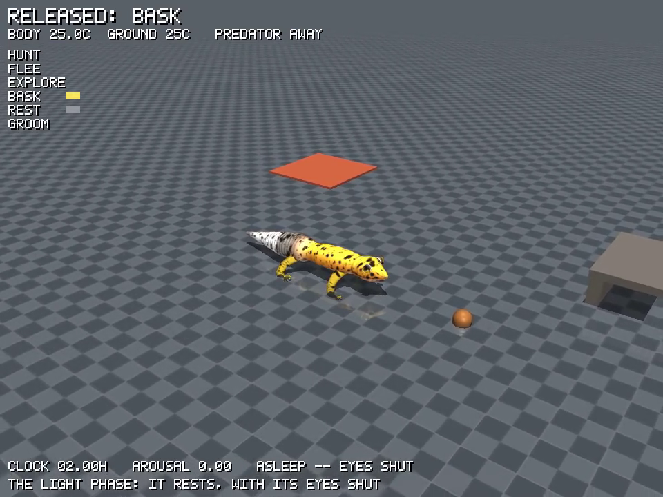
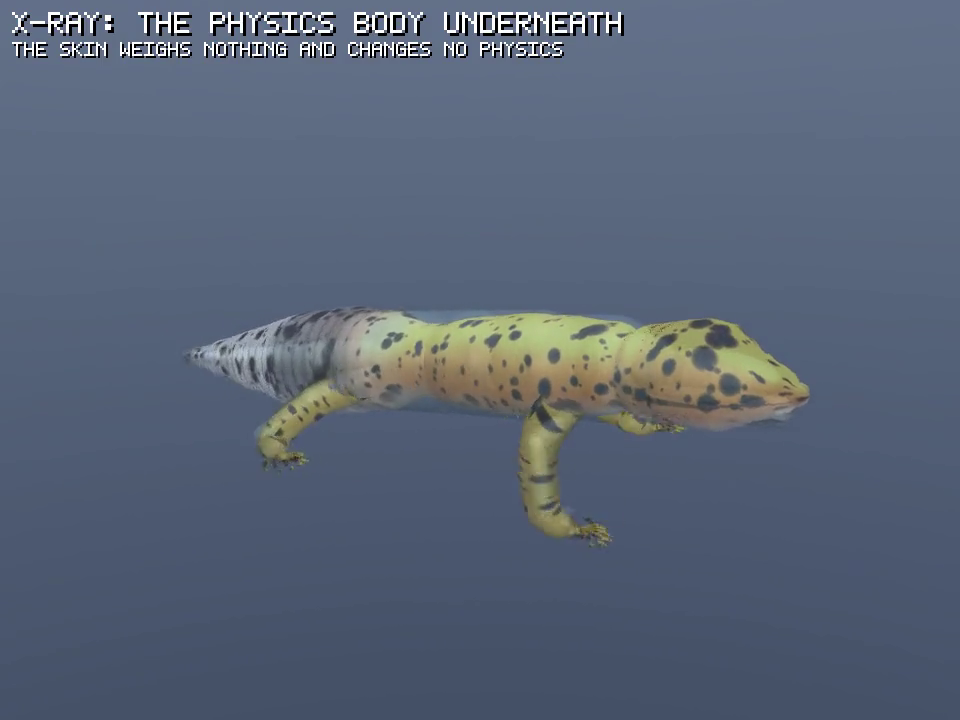

<title>NeuroGecko</title>
<link rel="preconnect" href="https://fonts.googleapis.com">
<link rel="preconnect" href="https://fonts.gstatic.com" crossorigin>
<link rel="stylesheet" href="https://fonts.googleapis.com/css2?family=Instrument+Serif:ital@0;1&family=IBM+Plex+Mono:wght@400;500;600&family=IBM+Plex+Sans:wght@400;500;600&display=swap">
<style>
  :root{
    --ground:#F6F1E8; --panel:#FFFDF9; --sunk:#EFE7DA;
    --rule:#DFD3C0; --rule-soft:#EBE2D3;
    --ink:#1F1811; --body:#4A3E31; --muted:#8A7A66;
    --ochre:#B9782A; --ochre-soft:#E9D3AE;
    --mauve:#8E5C89; --mauve-soft:#E8D6E6;
    --pass:#4F7A3A; --fail:#B24440;
    --grid:#E3D9C8;
    --shadow:0 1px 2px rgba(31,24,17,.06),0 8px 24px -12px rgba(31,24,17,.18);
  }
  @media (prefers-color-scheme:dark){
    :root:not([data-theme="light"]){
      --ground:#16120F; --panel:#211A15; --sunk:#1A1511;
      --rule:#3A2E24; --rule-soft:#2C231C;
      --ink:#F3E8D7; --body:#D6C7B1; --muted:#9C8C78;
      --ochre:#E3A94A; --ochre-soft:#5A421F;
      --mauve:#C79BC2; --mauve-soft:#4A3348;
      --pass:#86B06B; --fail:#D1615D;
      --grid:#302620;
      --shadow:0 1px 2px rgba(0,0,0,.5),0 10px 30px -14px rgba(0,0,0,.8);
    }
  }
  :root[data-theme="dark"]{
    --ground:#16120F; --panel:#211A15; --sunk:#1A1511;
    --rule:#3A2E24; --rule-soft:#2C231C;
    --ink:#F3E8D7; --body:#D6C7B1; --muted:#9C8C78;
    --ochre:#E3A94A; --ochre-soft:#5A421F;
    --mauve:#C79BC2; --mauve-soft:#4A3348;
    --pass:#86B06B; --fail:#D1615D;
    --grid:#302620;
    --shadow:0 1px 2px rgba(0,0,0,.5),0 10px 30px -14px rgba(0,0,0,.8);
  }

  *{box-sizing:border-box}
  body{
    background:var(--ground); color:var(--body);
    font-family:"IBM Plex Sans",ui-sans-serif,system-ui,sans-serif;
    font-size:15px; line-height:1.6; margin:0;
    -webkit-font-smoothing:antialiased;
  }
  .wrap{max-width:1120px;margin:0 auto;padding:0 24px}
  h1,h2,h3{color:var(--ink);text-wrap:balance;margin:0}
  h1{font-family:"Instrument Serif",Georgia,serif;font-weight:400;font-size:clamp(44px,7vw,84px);line-height:.98;letter-spacing:-.015em}
  h2{font-family:"Instrument Serif",Georgia,serif;font-weight:400;font-size:clamp(26px,3.4vw,38px);line-height:1.08}
  h3{font-size:15px;font-weight:600;letter-spacing:.01em}
  .mono{font-family:"IBM Plex Mono",ui-monospace,SFMono-Regular,monospace;font-variant-numeric:tabular-nums}
  .eyebrow{
    font-family:"IBM Plex Mono",monospace;font-size:11px;font-weight:500;
    letter-spacing:.16em;text-transform:uppercase;color:var(--muted);
  }
  a{color:var(--ochre)}
  :focus-visible{outline:2px solid var(--ochre);outline-offset:3px;border-radius:3px}

  /* ---------- masthead ---------- */
  header{border-bottom:1px solid var(--rule);padding:18px 0}
  .mast{display:flex;align-items:baseline;gap:14px;flex-wrap:wrap}
  .mast .name{font-family:"Instrument Serif",Georgia,serif;font-size:22px;color:var(--ink)}
  .mast .sp{flex:1}

  /* ---------- hero ---------- */
  .hero{padding:52px 0 8px}
  .lede{font-size:19px;line-height:1.55;max-width:60ch;margin:22px 0 0;color:var(--body)}
  .lede em{font-style:normal;color:var(--ink);box-shadow:inset 0 -.45em 0 var(--ochre-soft)}

  /* ---------- the viewport ---------- */
  .rig{
    margin:38px 0 0;border:1px solid var(--rule);border-radius:4px;
    background:var(--panel);box-shadow:var(--shadow);overflow:hidden;
  }
  .rig-top{display:grid;grid-template-columns:minmax(0,1.55fr) minmax(0,1fr)}
  @media (max-width:860px){.rig-top{grid-template-columns:1fr}}
  .stage{position:relative;background:#000;min-height:260px}
  .stage img{display:block;width:100%;height:100%;object-fit:cover}
  .stage-tag{
    position:absolute;left:12px;top:12px;display:flex;gap:8px;align-items:center;
    font-family:"IBM Plex Mono",monospace;font-size:11px;letter-spacing:.1em;
    text-transform:uppercase;color:#EFE4D3;background:rgba(10,8,6,.72);
    padding:5px 9px;border-radius:2px;backdrop-filter:blur(3px);
  }
  .dot{width:7px;height:7px;border-radius:50%;background:var(--mauve);flex:none}
  .dot.awake{background:var(--ochre)}

  .readout{border-left:1px solid var(--rule);padding:20px;display:flex;flex-direction:column;gap:16px}
  @media (max-width:860px){.readout{border-left:0;border-top:1px solid var(--rule)}}

  .clockline{display:flex;align-items:baseline;gap:10px}
  .clockline .t{font-family:"IBM Plex Mono",monospace;font-variant-numeric:tabular-nums;font-size:34px;font-weight:500;color:var(--ink);letter-spacing:-.02em}
  .pill{
    font-family:"IBM Plex Mono",monospace;font-size:10px;letter-spacing:.12em;text-transform:uppercase;
    padding:3px 8px;border-radius:2px;border:1px solid var(--rule);color:var(--muted);
  }
  .pill.asleep{color:var(--mauve);border-color:var(--mauve);background:var(--mauve-soft)}
  .pill.awake{color:var(--ochre);border-color:var(--ochre);background:var(--ochre-soft)}

  .meterrow{display:flex;flex-direction:column;gap:5px}
  .meterhead{display:flex;justify-content:space-between;align-items:baseline;font-family:"IBM Plex Mono",monospace;font-size:11px;color:var(--muted);letter-spacing:.06em}
  .meterhead b{color:var(--ink);font-weight:500;font-variant-numeric:tabular-nums}
  .track{height:8px;background:var(--sunk);border:1px solid var(--rule-soft);position:relative;overflow:hidden}
  .fill{position:absolute;inset:0 auto 0 0;background:var(--ochre);transition:width .18s linear}
  .fill.rest{background:var(--mauve)}
  .floor{position:absolute;top:-3px;bottom:-3px;width:1px;background:var(--fail)}
  .floornote{font-family:"IBM Plex Mono",monospace;font-size:10px;color:var(--fail);letter-spacing:.04em}

  .scrub{width:100%;accent-color:var(--ochre);margin:0}
  .ctl{display:flex;gap:10px;align-items:center}
  .btn{
    font-family:"IBM Plex Mono",monospace;font-size:11px;letter-spacing:.1em;text-transform:uppercase;
    padding:7px 12px;border:1px solid var(--rule);background:var(--panel);color:var(--ink);
    border-radius:2px;cursor:pointer;
  }
  .btn:hover{border-color:var(--ochre);color:var(--ochre)}

  .rig-foot{
    border-top:1px solid var(--rule);padding:12px 20px;
    font-family:"IBM Plex Mono",monospace;font-size:11px;color:var(--muted);letter-spacing:.04em;
    display:flex;gap:18px;flex-wrap:wrap;
  }

  /* ---------- sections ---------- */
  section{padding:64px 0;border-top:1px solid var(--rule)}
  .sechead{display:flex;flex-direction:column;gap:8px;margin-bottom:28px;max-width:62ch}
  .sechead p{margin:6px 0 0;color:var(--body)}

  /* ---------- receipts: measured bar vs published marker ---------- */
  .receipts{display:grid;gap:26px}
  .receipt{display:grid;grid-template-columns:minmax(0,190px) minmax(0,1fr);gap:20px;align-items:start}
  @media (max-width:700px){.receipt{grid-template-columns:1fr;gap:10px}}
  .receipt .what{font-size:14px;color:var(--ink);font-weight:500}
  .receipt .src{font-family:"IBM Plex Mono",monospace;font-size:11px;color:var(--muted);margin-top:3px;line-height:1.45}
  .plot{position:relative;height:44px;border-bottom:1px solid var(--rule)}
  .bar{position:absolute;left:0;bottom:0;height:20px;background:var(--ochre)}
  .mark{position:absolute;top:2px;bottom:0;border-left:2px dashed var(--ink)}
  .mark span{
    position:absolute;top:-2px;left:6px;white-space:nowrap;
    font-family:"IBM Plex Mono",monospace;font-size:10.5px;color:var(--ink);letter-spacing:.04em;
  }
  .barlab{
    position:absolute;bottom:24px;font-family:"IBM Plex Mono",monospace;font-size:11px;
    color:var(--ochre);font-weight:500;letter-spacing:.04em;
  }
  .legend{display:flex;gap:20px;flex-wrap:wrap;margin-top:8px}
  .legend i{display:inline-block;width:22px;height:9px;background:var(--ochre);vertical-align:-1px;margin-right:7px}
  .legend .dash{width:0;height:14px;border-left:2px dashed var(--ink);vertical-align:-3px}

  /* ---------- census ---------- */
  .census{display:grid;grid-template-columns:repeat(auto-fit,minmax(132px,1fr));gap:1px;background:var(--rule);border:1px solid var(--rule)}
  .cell{background:var(--panel);padding:16px}
  .cell .n{font-family:"IBM Plex Mono",monospace;font-size:27px;color:var(--ink);font-variant-numeric:tabular-nums;line-height:1.1}
  .cell .k{font-family:"IBM Plex Mono",monospace;font-size:10.5px;color:var(--muted);letter-spacing:.09em;text-transform:uppercase;margin-top:5px}

  .split{display:grid;grid-template-columns:minmax(0,1fr) minmax(0,1fr);gap:34px;align-items:start}
  @media (max-width:820px){.split{grid-template-columns:1fr}}
  figure{margin:0}
  figure img{width:100%;display:block;border:1px solid var(--rule);border-radius:3px;background:#000}
  figcaption{font-family:"IBM Plex Mono",monospace;font-size:11px;color:var(--muted);margin-top:8px;line-height:1.5}

  table{width:100%;border-collapse:collapse;font-size:13.5px}
  .tscroll{overflow-x:auto}
  th{
    text-align:left;font-family:"IBM Plex Mono",monospace;font-size:10.5px;letter-spacing:.1em;
    text-transform:uppercase;color:var(--muted);font-weight:500;padding:0 10px 8px 0;border-bottom:1px solid var(--rule);
  }
  td{padding:7px 10px 7px 0;border-bottom:1px solid var(--rule-soft);color:var(--body)}
  td.num{font-family:"IBM Plex Mono",monospace;font-variant-numeric:tabular-nums;color:var(--ink);white-space:nowrap}
  .ok{color:var(--pass);font-family:"IBM Plex Mono",monospace;font-size:11.5px;letter-spacing:.08em}

  .limits{background:var(--sunk);border:1px solid var(--rule);border-radius:3px;padding:22px 24px}
  .limits ul{margin:12px 0 0;padding-left:18px}
  .limits li{margin:6px 0}
  footer{border-top:1px solid var(--rule);padding:30px 0 56px;color:var(--muted);font-size:13px}
  @media (prefers-reduced-motion:reduce){*{transition:none!important;animation:none!important}}
</style>

<header>
  <div class="wrap mast">
    <span class="name">NeuroGecko</span>
    <span class="eyebrow">Eublepharis macularius</span>
    <span class="sp"></span>
    <a href="telemetry.html" class="eyebrow" style="text-decoration:none;border-bottom:1px solid var(--ochre);padding-bottom:2px">Live telemetry &rarr;</a>
    <span class="eyebrow">38 g &middot; 38 joints &middot; 5 of 8 brain modules</span>
  </div>
</header>

<main class="wrap">

  <div class="hero">
    <span class="eyebrow">A virtual animal</span>
    <h1>A leopard gecko rebuilt<br>from living animals.</h1>
    <p class="lede">
      Geckos walked over force plates so their legs could be weighed. Geckos were filmed at
      high speed eating crickets so the 80-millisecond snap of the jaw could be timed. Geckos
      slept with electrodes under their eyelids. Geckos were shown a live snake, to find out what
      actually frightens them &mdash; it is smell, not sight.
      <em>Every one of those numbers is in this animal.</em>
    </p>
  </div>

  <!-- ================= THE RIG ================= -->
  <div class="rig">
    <div class="rig-top">
      <div class="stage">
        
        <div class="stage-tag"><span class="dot" id="statedot"></span><span id="statetag">Asleep &mdash; eyes shut</span></div>
      </div>

      <div class="readout">
        <div>
          <div class="eyebrow">Circadian clock &middot; brain module 6</div>
          <div class="clockline">
            <span class="t mono" id="clock">02:00</span>
            <span class="pill asleep" id="pill">Asleep</span>
          </div>
        </div>

        <div class="meterrow">
          <div class="meterhead"><span>Arousal</span><b id="arv">0.000</b></div>
          <div class="track"><div class="fill" id="arbar" style="width:0%"></div></div>
        </div>

        <div class="meterrow">
          <div class="meterhead"><span>Rest salience &nbsp;<span style="color:var(--muted)">= 1 &minus; arousal</span></span><b id="rsv">1.000</b></div>
          <div class="track">
            <div class="fill rest" id="rsbar" style="width:100%"></div>
            <div class="floor" style="left:19.99%"></div>
          </div>
          <div class="floornote">&#9474; basal-ganglia release floor 0.1999 &mdash; nothing below it is released, however far ahead it is</div>
        </div>

        <div>
          <input class="scrub" id="scrub" type="range" min="0" max="1439" step="1" value="120" aria-label="Time of day, minutes">
          <div class="ctl">
            <button class="btn" id="play">Pause</button>
            <span class="eyebrow" id="hint">Playing a full day</span>
          </div>
        </div>
      </div>
    </div>

    <div class="rig-foot mono">
      <span>accepted walker &middot; gait_profile="lab" &middot; zero residual</span>
      <span>seed 3</span>
      <span>furnished world</span>
      <span>50 Hz control &middot; 500 Hz physics</span>
    </div>
  </div>

  <!-- ================= RECEIPTS ================= -->
  <section>
    <div class="sechead">
      <span class="eyebrow">Why it is not a gecko-shaped robot</span>
      <h2>It reproduces experiments on real geckos that nobody fitted it to.</h2>
      <p>
        A number measured in the simulation is drawn as a bar. A number measured in a living
        animal, and never fitted to, is a dashed marker. The point is the distance between them.
      </p>
    </div>

    <div class="receipts">
      <div class="receipt">
        <div>
          <div class="what">Tail restrained &rarr; hind-limb force lost</div>
          <div class="src">Living geckos, n&nbsp;=&nbsp;10<br>Jagnandan &amp; Higham 2017</div>
        </div>
        <div>
          <div class="plot">
            <div class="barlab" style="left:0">simulated &minus;20.7%</div>
            <div class="bar" style="width:69.0%"></div>
            <div class="mark" style="left:70.0%"><span>measured &minus;21%</span></div>
          </div>
          <div class="plot" style="margin-top:14px">
            <div class="barlab" style="left:0">simulated &minus;16.5%</div>
            <div class="bar" style="width:55.0%"></div>
            <div class="mark" style="left:56.7%"><span>measured &minus;17%</span></div>
          </div>
        </div>
      </div>

      <div class="receipt">
        <div>
          <div class="what">How long one cricket lasts</div>
          <div class="src">Metabolism and feeding interval come from<br>different scientists, decades apart</div>
        </div>
        <div>
          <div class="plot">
            <div class="barlab" style="left:0">its own metabolism says 79 h</div>
            <div class="bar" style="width:79%"></div>
            <div class="mark" style="left:56%"><span>keepers feed every 56 h</span></div>
          </div>
          <div class="src" style="margin-top:9px">Nobody arranged that agreement. It falls out of the animal&rsquo;s own physiology.</div>
        </div>
      </div>

      <div class="receipt">
        <div>
          <div class="what">Hunger at the published feeding interval</div>
          <div class="src">Unfitted &mdash; hunger is computed from<br>metabolism, not tuned to this</div>
        </div>
        <div>
          <div class="plot">
            <div class="barlab" style="left:0">70% hungry at 2.33 days</div>
            <div class="bar" style="width:70%"></div>
            <div class="mark" style="left:70%"><span>2.33-day interval</span></div>
          </div>
        </div>
      </div>

      <div class="receipt">
        <div>
          <div class="what">Foot duty factor, all four feet</div>
          <div class="src">Fraction of a stride each foot carries load<br>Living geckos, n&nbsp;=&nbsp;10</div>
        </div>
        <div>
          <div class="plot">
            <div class="barlab" style="left:0">hind 0.787 / 0.790</div>
            <div class="bar" style="width:78.8%"></div>
            <div class="mark" style="left:78%"><span>measured 0.78</span></div>
          </div>
          <div class="plot" style="margin-top:14px">
            <div class="barlab" style="left:0">fore 0.770 / 0.764</div>
            <div class="bar" style="width:76.7%"></div>
            <div class="mark" style="left:70%"><span>measured 0.70</span></div>
          </div>
          <div class="src" style="margin-top:9px">Four feet even to within 0.006 &mdash; and the fore pair overshoots. Two of six gait gates still fail.</div>
        </div>
      </div>
    </div>

    <div class="legend eyebrow">
      <span><i></i>measured in the simulation</span>
      <span><i class="dash"></i>measured in a living gecko</span>
    </div>
  </section>

  <!-- ================= THE BODY ================= -->
  <section>
    <div class="sechead">
      <span class="eyebrow">Under the skin</span>
      <h2>Forty-eight solids carrying thirty-eight grams.</h2>
      <p>
        There are no bones in it &mdash; no skull, no vertebrae, no femur. What there is, is the body
        the physics uses, and it is what every anatomical check measures. The skin is a separate
        surface bound over the top; with it and without it the animal&rsquo;s trajectory is identical.
      </p>
    </div>

    <div class="census">
      <div class="cell"><div class="n">38</div><div class="k">grams</div></div>
      <div class="cell"><div class="n">106</div><div class="k">mm snout&ndash;vent</div></div>
      <div class="cell"><div class="n">48</div><div class="k">solids</div></div>
      <div class="cell"><div class="n">38</div><div class="k">joints</div></div>
      <div class="cell"><div class="n">30</div><div class="k">actuators</div></div>
      <div class="cell"><div class="n">2</div><div class="k">passive wrists</div></div>
    </div>

    <div class="split" style="margin-top:34px">
      <figure>
        
        <figcaption>
          Skin, x-ray, and the bare physics body. 39 capsules, 4 spheres, 4 boxes, 1 ellipsoid.
        </figcaption>
      </figure>

      <div>
        <h3 style="margin-bottom:12px">Fourteen anatomical checks, against living animals</h3>
        <div class="tscroll">
          <table>
            <thead><tr><th>Check</th><th>Measured</th><th>Accepted</th><th></th></tr></thead>
            <tbody>
              <tr><td>Total mass</td><td class="num">0.038 kg</td><td class="num">0.034&ndash;0.042</td><td class="ok">PASS</td></tr>
              <tr><td>Tail mass fraction</td><td class="num">0.22</td><td class="num">0.19&ndash;0.25</td><td class="ok">PASS</td></tr>
              <tr><td>Tail chain / SVL</td><td class="num">0.73</td><td class="num">0.69&ndash;0.77</td><td class="ok">PASS</td></tr>
              <tr><td>Centre of mass / SVL</td><td class="num">0.678</td><td class="num">0.639&ndash;0.679</td><td class="ok">PASS</td></tr>
              <tr><td>Hip height / SVL</td><td class="num">0.149</td><td class="num">0.14&ndash;0.16</td><td class="ok">PASS</td></tr>
              <tr><td>Shoulder height / SVL</td><td class="num">0.109</td><td class="num">0.103&ndash;0.123</td><td class="ok">PASS</td></tr>
              <tr><td>Femur / tibia</td><td class="num">1.020</td><td class="num">0.90&ndash;1.06</td><td class="ok">PASS</td></tr>
              <tr><td>Hindlimb chain / SVL</td><td class="num">0.417</td><td class="num">0.387&ndash;0.447</td><td class="ok">PASS</td></tr>
              <tr><td>Inner-eye gap</td><td class="num">0.010</td><td class="num">0.009&ndash;0.011</td><td class="ok">PASS</td></tr>
            </tbody>
          </table>
        </div>
        <p class="src mono" style="margin-top:12px;color:var(--muted)">
          14 of 14 pass. Five further checks omitted here for width.<br>
          The two passive wrists are why two gait gates fail: the forelimb has one free
          joint where the hindlimb has two. That is anatomy, not tuning.
        </p>
      </div>
    </div>
  </section>

  <!-- ================= THE METHOD ================= -->
  <section>
    <div class="sechead">
      <span class="eyebrow">How it was built</span>
      <h2>Assembled, not trained.</h2>
      <p>
        The virtual fly and the virtual rat are trained neural networks. This animal is arithmetic:
        a hand-written spinal rhythm on measured gait numbers, a published basal-ganglia model that
        reproduces its paper&rsquo;s table to four decimal places, hunger from its own metabolism.
        When a network was trained for six million steps to improve the walk, it came out
        <strong style="color:var(--ink)">worse</strong>, and was thrown away.
      </p>
    </div>

    <div class="census">
      <div class="cell"><div class="n">359</div><div class="k">propositions tested</div></div>
      <div class="cell"><div class="n">293</div><div class="k">refuted</div></div>
      <div class="cell"><div class="n">81.6%</div><div class="k">of everything tried</div></div>
      <div class="cell"><div class="n">0</div><div class="k">neural networks running</div></div>
    </div>

    <p style="margin-top:22px;max-width:62ch">
      Every number carries where it came from &mdash; measured, derived, or invented &mdash; and the
      species it was measured in. And where nobody has measured a living gecko, the model says so
      and refuses to guess. No one has established this species&rsquo; sleep-cycle period, so that
      number is left empty rather than borrowed from a bearded dragon. No gecko has ever been shown
      to find prey by smell alone, so its nose reports <em style="font-style:normal;color:var(--ink)">that</em>
      something is there and never <em style="font-style:normal;color:var(--ink)">where</em>.
    </p>
  </section>

  <!-- ================= LIMITS ================= -->
  <section>
    <div class="limits">
      <span class="eyebrow">What it cannot do</span>
      <h3 style="font-family:'Instrument Serif',Georgia,serif;font-weight:400;font-size:24px;margin-top:6px">Stated plainly, because the rest of the page is only worth reading if this part is honest.</h3>
      <ul>
        <li><strong style="color:var(--ink)">It is about half built.</strong> Five of eight brain modules exist. Memory and learning do not.</li>
        <li><strong style="color:var(--ink)">It mostly misses.</strong> It stalks, strikes with a real jaw, and catches on roughly 6.5% of strikes.</li>
        <li><strong style="color:var(--ink)">The eye is the weak link.</strong> Finding a cricket has been refuted three separate ways and is not accepted.</li>
        <li><strong style="color:var(--ink)">The citations are not yet verified.</strong> 212 references were harvested from the project&rsquo;s own text and none has been checked against a bibliographic database.</li>
        <li><strong style="color:var(--ink)">Two of six gait gates fail</strong>, and the animal does not grow, age, or reproduce.</li>
      </ul>
    </div>
  </section>
</main>

<footer class="wrap">
  <span class="mono">NeuroGecko &middot; a virtual leopard gecko &middot; simulated in MuJoCo</span>
</footer>

<script>
(function(){
  var DAY=86400, DARK=0.5, RAMP=1.5*3600, ONSET=4860, PEAK=5*3600;

  // brain/arousal.py, arousal_at(), transcribed exactly.
  function arousalAt(t){
    t=((t%DAY)+DAY)%DAY;
    var dusk=DAY*(1-DARK), since=t-dusk;
    if(since<0) since+=DAY;
    var night=DAY*DARK;
    if(since>night){
      var untilDusk=DAY-since;
      if(untilDusk<=RAMP) return Math.min(1,Math.max(0,1-untilDusk/RAMP))*0.6;
      return 0;
    }
    if(since<ONSET) return 0.6+0.4*(since/ONSET);
    if(since<=PEAK) return 1;
    var rem=night-PEAK;
    return Math.min(1,Math.max(0,1-(since-PEAK)/rem));
  }

  var scrub=document.getElementById("scrub"),
      clock=document.getElementById("clock"),
      pill=document.getElementById("pill"),
      arv=document.getElementById("arv"), arbar=document.getElementById("arbar"),
      rsv=document.getElementById("rsv"), rsbar=document.getElementById("rsbar"),
      shot=document.getElementById("shot"),
      tag=document.getElementById("statetag"), dot=document.getElementById("statedot"),
      play=document.getElementById("play"), hint=document.getElementById("hint");

  var sleepSrc="frame_sleep.png", nightSrc="frame_night.png", shown=sleepSrc;

  function render(min){
    var a=arousalAt(min*60), rest=1-a, asleep=a<0.1;
    clock.textContent=String(Math.floor(min/60)).padStart(2,"0")+":"+String(min%60).padStart(2,"0");
    arv.textContent=a.toFixed(3);
    rsv.textContent=rest.toFixed(3);
    arbar.style.width=(a*100).toFixed(1)+"%";
    rsbar.style.width=(rest*100).toFixed(1)+"%";
    pill.textContent=asleep?"Asleep":"Awake";
    pill.className="pill "+(asleep?"asleep":"awake");
    dot.className="dot"+(asleep?"":" awake");
    tag.innerHTML=asleep?"Asleep &mdash; eyes shut":"Awake &mdash; walking, eyes open";
    var want=asleep?sleepSrc:nightSrc;
    if(want!==shown){shown=want;shot.src=want;}
  }

  var t=120, running=true, last=0;
  function tick(ts){
    if(running){
      if(!last) last=ts;
      if(ts-last>40){ last=ts; t=(t+2)%1440; scrub.value=t; render(t); }
    }
    requestAnimationFrame(tick);
  }
  scrub.addEventListener("input",function(){ running=false; play.textContent="Play"; hint.textContent="Dragging"; t=+scrub.value; render(t); });
  play.addEventListener("click",function(){
    running=!running; last=0;
    play.textContent=running?"Pause":"Play";
    hint.textContent=running?"Playing a full day":"Paused";
  });
  render(t);
  if(!window.matchMedia||!window.matchMedia("(prefers-reduced-motion: reduce)").matches){
    requestAnimationFrame(tick);
  }else{ running=false; play.textContent="Play"; hint.textContent="Paused"; }
})();
</script>
